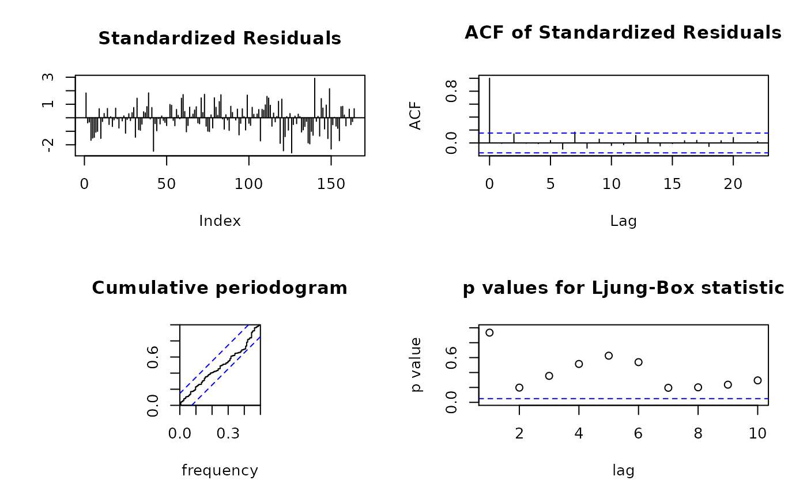
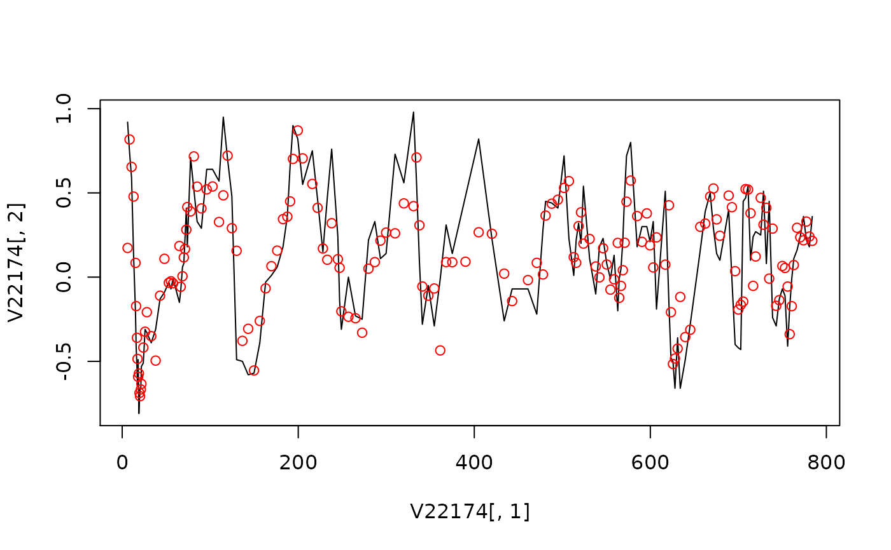

car.RdFit a continuous AR model to an irregularly sampled univariate time series with the Kalman filter
car(x, y=NULL, scale = 1.5, order = 3, ctrl=car_control()) # S3 method for car print(x, digits = 3, ...) # S3 method for car summary(object, ...) # S3 method for car plot(x, type=c("spec", "pred", "diag"),...) # S3 method for car predict(object, se.fit = TRUE, digits = 3, plot.it=TRUE,...) # S3 method for car spectrum(object, frmult=1, n.freq, plot.it = TRUE, na.action = na.fail, ...) # S3 method for car AIC(object, ..., k=NULL) # S3 method for car tsdiag(object, gof.lag = 10, ...) # S3 method for car kalsmo(object)
| x | two column data frame or matrix with the first column
being the sampled time and the second column being the observations at
the first column; otherwise |
|---|---|
| y | not used if |
| scale | The kappa value referred to in the paper by Belcher et a. (1994). We now recommend selection of kappa along with the model order by using AIC. Also, it is suggested to choose kappa close to 2pi times 1/mean.delta (reciprocal of the mean time between observations), though it is a good idea to explore somewhat lower and higher values to see whether the spectrum estimates were sensitive to this choice. Choosing kappa lower increases the risk of trying to estimate the spectrum beyond the effective Nyquist frequency of the data - though this does depend on the distribution of intersample times. |
| order | order of autoregression. |
| ctrl | control parameters used in predict and numerical optimization. |
| object | object of class |
| type | in |
| se.fit | Logical: should standard errors of prediction be returned? |
| digits | return value digits |
| plot.it | Logical: plot the forecast values? |
| gof.lag | the maximum number of lags for a Portmanteau goodness-of-fit test |
| frmult | numerical value, can be used to multiply the frequency range |
| n.freq | number of frequency |
| k | penalty, not used |
| na.action |
|
| ... | further arguments to be passed to particular methods |
spectrum returns (and by default plots) the spectral density of the fitted model.
tsdiag is a generic diagnostic function for continuous AR model. It will generally plot the residuals,
often standadized, the autocorrelation function of the residuals, and
the p-values of a Portmanteau test for all lags up to gof.lag.
The method for car object plots residuals scaled by the estimate of their (individual) variance, and use the Ljung--Box version of the portmanteau test.
AIC For continuous CAR model selection, t-statistic and AIC are calculated
based on reparameterized coefficients phi and covariance matrix
ecov. From the t-statistic, the final model is chosen such that
if the true model order is less than the large value used for
model estimation then for i > order the deviations of the
estimated parameters phi from their true value of 0 will be
small. From the AIC, the final model is chosen based on the smallest AIC
value. A table with t-statistic and AIC for the corresponding model order.
factab calculate characteristic roots and system frequency from the estimated
reparameterized coefficients of CAR fits.
smooth computes components corresponding to the diagonal transition matrix with the Kalman smoother. This may not be stable for some data due to numerical inversion of matrix.
A list of class "car" with the following elements:
The number of observations used in fitting
The order of the fitted model. This is chosen by the user.
The number of parameters estimated. This may include the mean and the observation noise ratio.
The kappa value referred to in the paper of Belcher et al.
If vri=1, estimate the observation noise ratio.
The estimated observation noise ratio.
The estimated innovation variance.
The estimated reparameterized autoregressive parameters.
The estimated mean of the series used in fitting and for use in prediction.
All estimated parameters, which include phi, and possibly x.mean and vr.
The estimated standard error of b
The estimated correlation matrix of b
The estimated covariance matrix of phi. See also
AIC
The real part of roots of phi. See also AIC
The imaginary part of roots of phi. See also
AIC
The numeric vector of sampled time.
The numeric vector of observations at sampled time
tim.
The filtered time series with the Kalman filter.
The estimated variance of Kalman filtered time series
filser
The smoothed time series with the Kalman smoother.
The estimated variance of smoothed time series
sser
The standardized residuals from the fitted model.
Time of predictions.
Predictions for the pretime.
Prediction variance of pred
Fitted values including pred for all the time series. See also fty.
Variance of fitted values including prv for all the time series. See also fty.
Forecast type
Numeric vector: iteration
Numeric vector: sum of squares for each tnit
Matrix with rows for tnit and columns for parameter estimates
AIC value for the fitted model
BIC value for the fitted model
Belcher, J. and Hampton, J. S. and Tunnicliffe Wilson, G. (1994). Parameterization of continuous time autoregressive models for irregularly sampled time series data. Journal of the Royal Statistical Society, Series B, Methodological,56,141--155
Jones, Richard H. (1981). Fitting a continuous time autoregression to discrete data. Applied Time Series Analysis II, 651--682
Wang, Zhu (2004). The Application of the Kalman Filter to Nonstationary Time Series through Time Deformation. PhD thesis, Southern Methodist University
Wang, Zhu and Woodward, W. A. and Gray, H. L. (2009). The Application of the Kalman Filter to Nonstationary Time Series through Time Deformation. Journal of Time Series Analysis, 30(5), 559-574.
Wang, Zhu (2013). cts: An R Package for Continuous Time Autoregressive Models via Kalman Filter. Journal of Statistical Software, Vol. 53(5), 1--19. http://www.jstatsoft.org/v53/i05
G. Tunnicliffe Wilson and Zhu Wang
car_control for predict and numerical optimization parameters, and AIC for model selection
#> #> READING OF MODEL PARAMETER PARAMETER SUCCESSFUL #> READING OF CONTROL PARAMETER SUCCESSFUL #> #> ROOT EQUALITY SWITCH: #> [1] 1 #> MAIN LOOP IN RESG1 BEGINS #> ITERATION 0: #> LAMBDA = #> [1] 0.01 #> INITIAL SUM OF SQUARES = #> [1] 12.92737 #> INITIAL PARAMETER VALUES #> [1] 0 0 0 0 0 0 0 #> INITIAL VALUE OF CONSTANT TERM = #> [1] 0.1053049 #> MAIN LOOP IN RESG1 BEGINS #> MAIN LOOP IN RESG1 BEGINS #> MAIN LOOP IN RESG1 BEGINS #> MAIN LOOP IN RESG1 BEGINS #> MAIN LOOP IN RESG1 BEGINS #> MAIN LOOP IN RESG1 BEGINS #> ROOT EQUALITY SWITCH: #> [1] 0 #> #> ITERATION : #> [1] 1 #> LAMBDA: #> [1] 0.001 #> SUM OF SQUARES = #> [1] 9.107596 #> PARAMETER VALUES #> [1] -0.30940142 0.12339492 0.08810410 0.04348192 0.41661288 -0.10084202 #> [7] 0.20167791 0.17401878 #> ROOT EQUALITY SWITCH: #> [1] 0 #> ROOT EQUALITY SWITCH: #> [1] 0 #> ROOT EQUALITY SWITCH: #> [1] 0 #> #> ITERATION : #> [1] 2 #> LAMBDA: #> [1] 0.01 #> SUM OF SQUARES = #> [1] 8.853833 #> PARAMETER VALUES #> [1] -0.394234150 0.214279964 0.099421439 0.007241027 0.531324736 #> [6] -0.242421399 0.334272521 0.172746273 #> ROOT EQUALITY SWITCH: #> [1] 0 #> #> ITERATION : #> [1] 3 #> LAMBDA: #> [1] 0.001 #> SUM OF SQUARES = #> [1] 8.754946 #> PARAMETER VALUES #> [1] -0.49817173 0.33311175 0.09249703 -0.02483595 0.60470553 -0.37474650 #> [7] 0.46502435 0.17300766 #> ROOT EQUALITY SWITCH: #> [1] 0 #> #> ITERATION : #> [1] 4 #> LAMBDA: #> [1] 1e-04 #> SUM OF SQUARES = #> [1] 8.745203 #> PARAMETER VALUES #> [1] -0.49787052 0.35157496 0.08335691 -0.01990383 0.60243629 -0.36674995 #> [7] 0.47582980 0.17321285 #> ROOT EQUALITY SWITCH: #> [1] 0 #> #> ITERATION : #> [1] 5 #> LAMBDA: #> [1] 1e-05 #> SUM OF SQUARES = #> [1] 8.744615 #> PARAMETER VALUES #> [1] -0.50211925 0.35494164 0.08588158 -0.02213610 0.60544366 -0.37311695 #> [7] 0.48349319 0.17331639 #> ROOT EQUALITY SWITCH: #> [1] 0 #> #> PROCESSING COMPLETED #> ITERATIONS COMPLETED: #> [1] 6 #> CONVERGENCE ACHIEVED #> SEARCH PROGRESSED #> #> FINAL SUM OF SQUARES: #> [1] 8.74455 #> MEAN SUM OF SQUARES : #> [1] 0.05605481 #> INNOVATION PROCESS VARIANCE ESTIMATE: #> [1] 1.369916e-09 #> GEOMETRIC MEAN VARIANCE MULTIPLIER: #> [1] 40918427 #> FINAL PARAMETER VALUES: #> [1] -0.50100015 0.35535886 0.08542050 -0.02177307 0.60469577 -0.37050651 #> [7] 0.48268799 0.17330672 #> #> MAIN LOOP IN RESG1 BEGINS#> #> Call: #> car(x = V22174, scale = 0.2, order = 7, ctrl = car_control(trace = TRUE)) #> #> Order of model = 7, sigma^2 = 1.37e-09 #> #> Estimated coefficients (standard errors): #> phi_1 phi_2 phi_3 phi_4 phi_5 phi_6 phi_7 #> coef -0.501 0.355 0.085 -0.022 0.605 -0.371 0.483 #> S.E. 0.108 0.111 0.060 0.071 0.084 0.124 0.112 #> #> Estimated mean (standard error): #> [1] 0.173 #> [1] 0.022spectrum(fit)tsdiag(fit)#> #> Call: #> car(x = V22174, scale = 0.2, order = 7, ctrl = car_control(trace = TRUE)) #> #> Model selection statistics #> #> order t.statistic AIC #> 1 -4.77 -20.78 #> 2 -4.45 -38.57 #> 3 3.25 -47.15 #> 4 2.37 -50.76 #> 5 6.11 -86.05 #> 6 -0.76 -84.63 #> 7 4.32 -101.27#> #> Call: #> factab(object = fit) #> #> Characteristic root of original parameterization in alpha #> #> 1 2 3 4 5 #> -0.006+0.058i -0.006-0.058i -0.029+0.300i -0.029-0.300i -0.030+0.135i #> 6 7 #> -0.006+0.058i -0.006-0.058i #> #> Frequency #> #> 1 2 3 4 5 6 7 #> 0.009 0.009 0.048 0.048 0.022 0.022 0.000### alternatively fit2 <- car(V22174,scale=0.2,order=7, ctrl=car_control(fty=3)) plot(V22174[,1], V22174[,2], type="l")